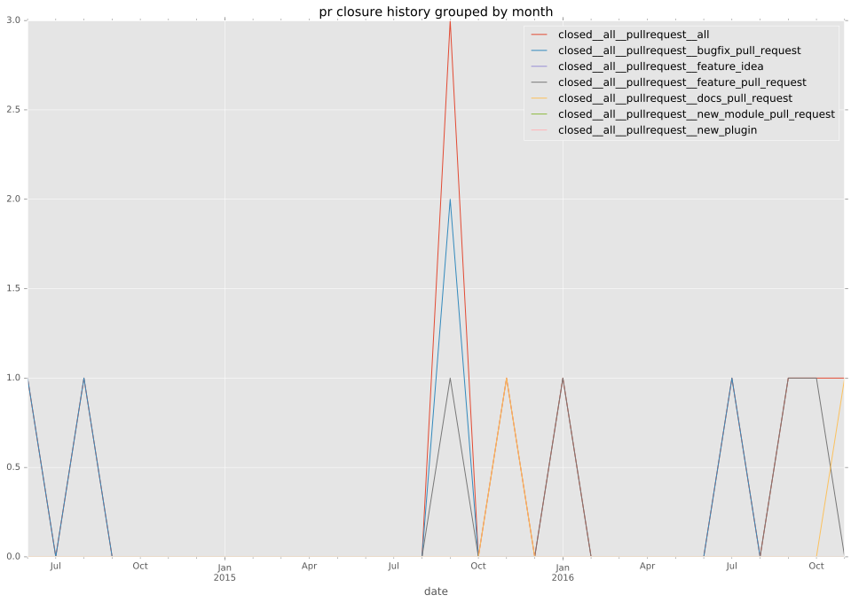
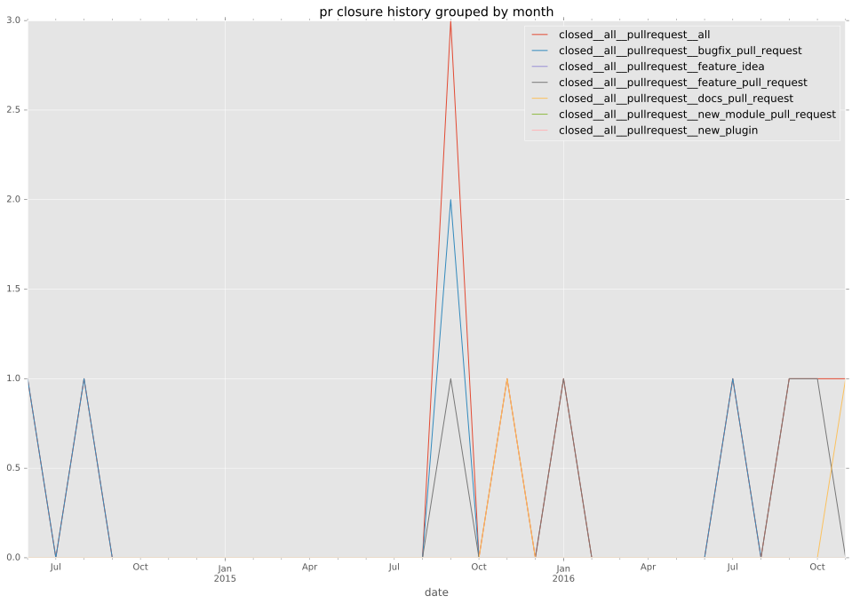

total issue counts
bugfix pull request: 6
pullrequest: 10
docs pull request: 1
feature pull request: 3
feature idea: 1
issue: 7
bug report: 6
issue history
pullrequest history
 

days open by issue type
feature pull request
count: 6
std: 138.295336147
min: 0
max: 279
median: 24.0
mean: 101.0
all
count: 22
std: 124.606775437
min: 0
max: 393
median: 24.0
mean: 88.9090909091
pullrequest
count: 0
std: nan
min: nan
max: nan
median: nan
mean: nan
docs pull request
count: 2
std: 0.0
min: 79
max: 79
median: 79.0
mean: 79.0
bugfix pull request
count: 10
std: 30.769573716
min: 0
max: 93
median: 2.0
mean: 17.1
feature idea
count: 0
std: nan
min: nan
max: nan
median: nan
mean: nan
issue
count: 0
std: nan
min: nan
max: nan
median: nan
mean: nan
bug report
count: 4
std: 139.760211314
min: 82
max: 393
median: 273.0
mean: 255.25
closures grouped by total days open